2025 年 7 月 4 日小阔天空直播分享稿
MCP 大火之后，又出现了 A2A 等协议。W3C 也成立了 Web Agent Protocol 社区工作组，在讨论 Agent 协议的未来。
在这个背景下，有一个叫 AG-UI 的协议突然进入了人们的视野。但似乎又没有掀起很大风浪。AG-UI 是什么，它跟其他 Agent 协议有什么区别和关联。它会像 MCP 一样带火业界吗？还仅仅是一个前端的玩具。
陆沉带来 AG-UI 的介绍和一些思考与实践。跟大家讨论一下 Agent 时代，UI 和前端该何去何从。
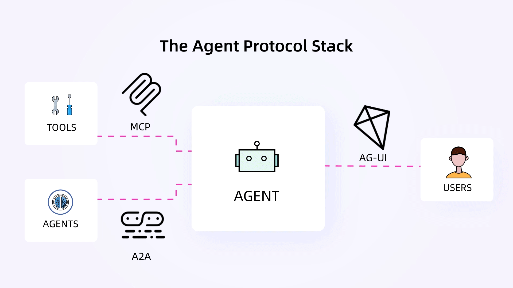
什么是 AG-UI
都说今年是「Agent 元年」，市面上各种 Agent 层出不穷。智能体已经从概念演示阶段，逐步进入生产应用。但是大部分 Agent 都关注在怎么自动化的执行各种流程。尽量在减少跟用户的交互。
其实并不是所有的情况下都需要这样。拿 cursor 举例。cursor 的编码 Agent 其实是在和用户协作。用户可以看到 Agent 在做什么。可以协同处理工作，比如「框一段代码让 Agent 改一下」。
如果我们今天要构建一个这样的让用户和 Agent 可以协作的产品。会面临什么样的挑战：
- 实时的流处理：大模型是逐 token 输出内容的。但是 UI 需要实时的响应。
- 要花很多时间处理 json 格式、内容提取。还要容错。
- 前端也要处理。不如把 markdown 中的某些内容换成其他组件来渲染。
- 工具编排调用：Agent 的 Function Call 和 Tool Use 都需要实时展示进度和结果。比如 Cursor 的使用 MCP 的交互批准。
- 共享的可变状态：跟前端的 Ajax 类似。如果跟 Agent 的每次对话都重新渲染整个界面是不经济的。所以也需要一个局部更新 UI 的机制。
- 并发和取消。比如用户可能会并发多个请求。会取消，切换 Agent；
- 框架不对齐：现在 Agent 框架 LangChain、LangGraph、CrewAI、Mastra、AG2，还有不愿意用框架裸写的 Agent 的同学。并没有通用的方案和协议来做类似的事情。
AG-UI 是 CopilotKit 团队带来的一种开放的轻量级协议，通过基本的 HTTP 或者二进制传送单个 JSON 事件序列，并在此之上封装消息、工具调用、JSON Patch、生命周期等信号，目的是为了解决开发 Agent 应用时，前端和 Agent 的信息交流、状态同步问题。
一个我实际遇到的问题
在黑客松时，我使用 LangGraph 开发了一个 Agent。我发现我不仅要在服务端自己定义一套 SSE Type 格式，还要在前端对等的写一套解析。
左边是 LangGraph 的事件定义。我需要每个事件都改写处理一下。比如要在 on_tool_start 的时候暂存工具调用。在 on_tool_end 之后把暂存的工具调用回写到返回里。
右边是前端。为了能对等处理，需要每一个事件都对等的写一份逻辑。比如 tool 的参数是啥，返回是什么。反应到界面上怎么处理。
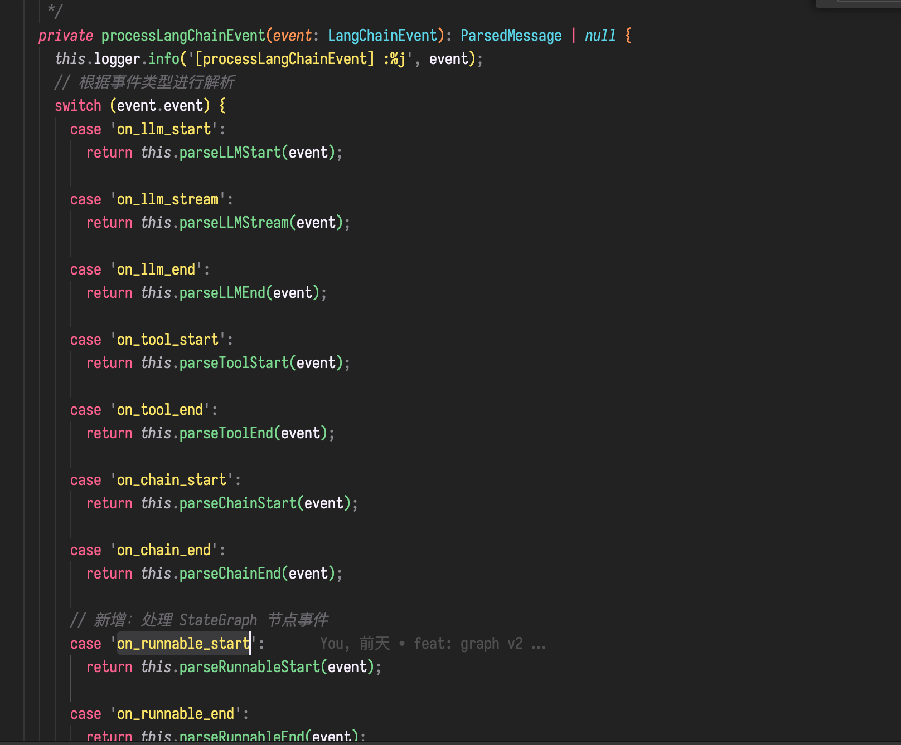
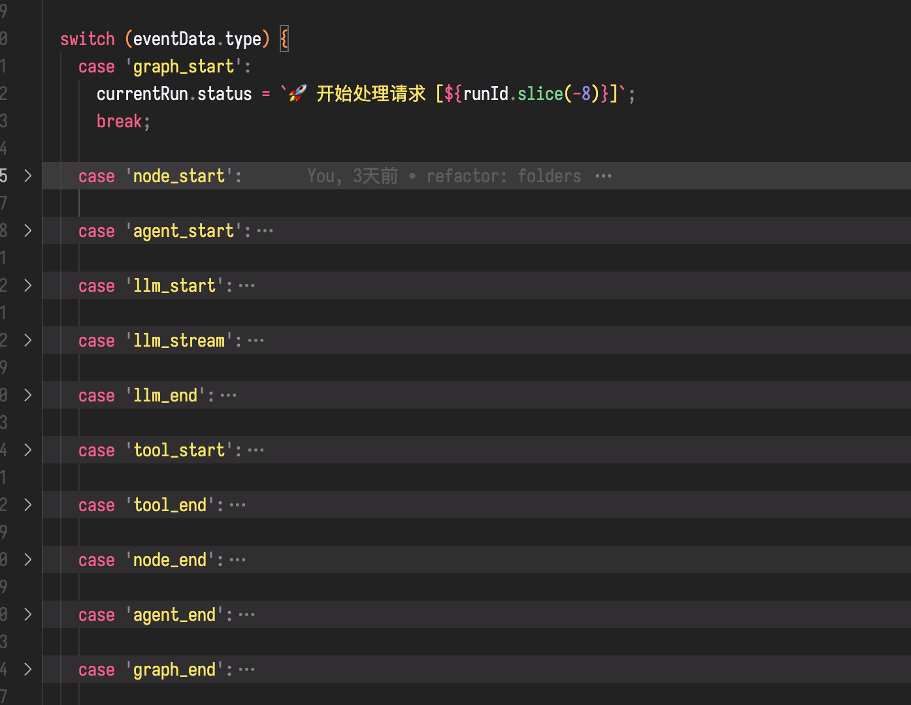
相似的案例还不少。在黑客松群里随便一抛就有回应。如果这么简单的 Agent 流处理都这么麻烦（不难。但是麻烦）。更高阶的通信和交互需求怎么处理？
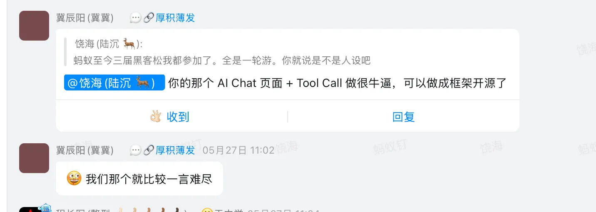
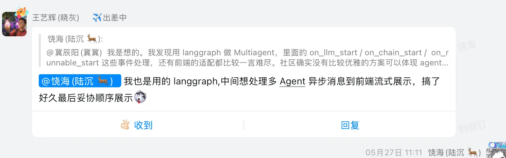
AG-UI 的解决方案
AG-UI 的解决方案是在 Agent 框架和应用之间加一层。
首先定义一系列标准化的、基于事件的通信协议；
然后提供后端的 SDK，用于把 Agent 的输出封装成 AG-UI 协议。
提供一个前端的 SDK，用于跟 Agent 使用 AG-UI 协议；把 AG-UI 的事件流转成前端的状态流。前端基于这个状态流进行渲染。
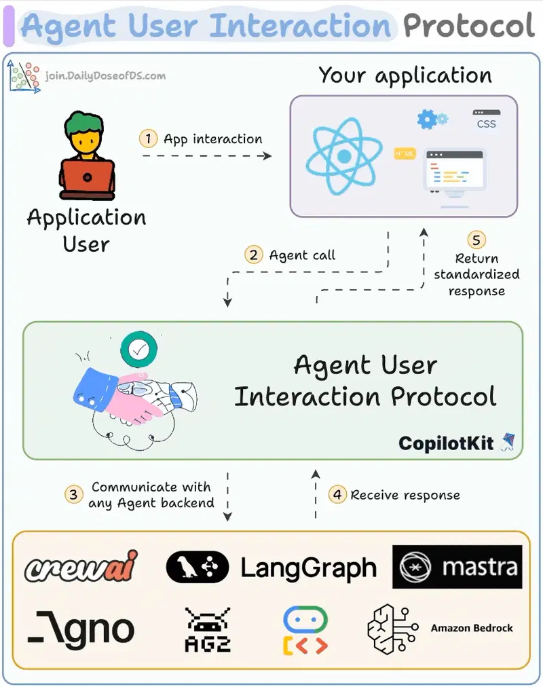 |
协议 | ### Message types AG-UI defines several event categories for different aspects of agent communication: + Lifecycle events - RUN_STARTED, RUN_FINISHED, RUN_ERROR- STEP_STARTED, STEP_FINISHED+ Text message events - TEXT_MESSAGE_START, TEXT_MESSAGE_CONTENT, TEXT_MESSAGE_END+ Tool call events - TOOL_CALL_START, TOOL_CALL_ARGS, TOOL_CALL_END+ State management events - STATE_SNAPSHOT, STATE_DELTA, MESSAGES_SNAPSHOT+ Special events - RAW, CUSTOM |
|---|---|---|
| 后端 SDK (LangGraph 默认支持） |
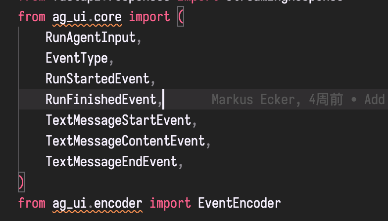 |
|
| 前端 SDK | 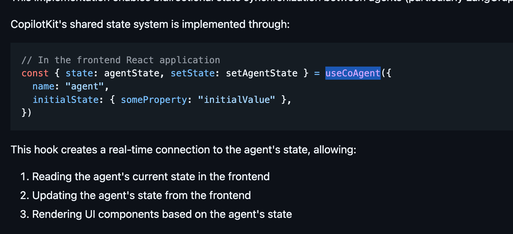 |
案例拆解
SharedState：食谱 App
先来看这个案例。这个案例左侧展示了一个「食谱」界面。右侧是一个 Chat。输入「我想吃比萨」之后，大模型开始输出。
与之前我们接触到的在聊天流的输出不一样。这次它并没有在右侧 Chat 吐文字，而是直接修改了左侧「食谱」界面的标题，重新生成了原料，梳理了步骤。并且都是流式的。
看一下怎么做的：
Agent 部分
首先，后端使用 LangGraph 开发了一个 StateGraph Agent。State 中有一个类型为 Dict 的 recipe，里面包含 skill_level、special_preferences、cooking_time、ingredients 和 instructions 等字段。
同时定义了一个 GENERATE_RECIPE_TOOL工具，用于结构化的生成 recipe。
然后是角色设定。让大模型使用工具、按要求生成 recipe。
最后是 tool_calls 解析。把 tool_calls 的返回，解析成 recipe 结构，返回。
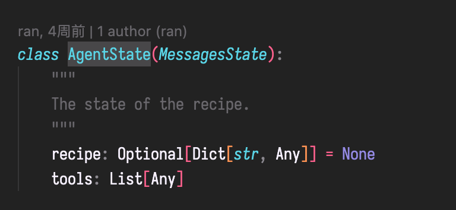 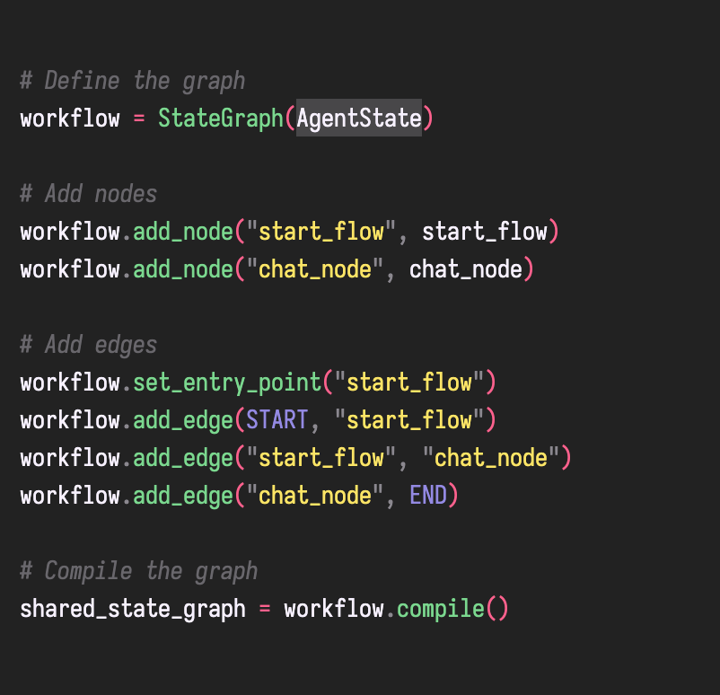 |
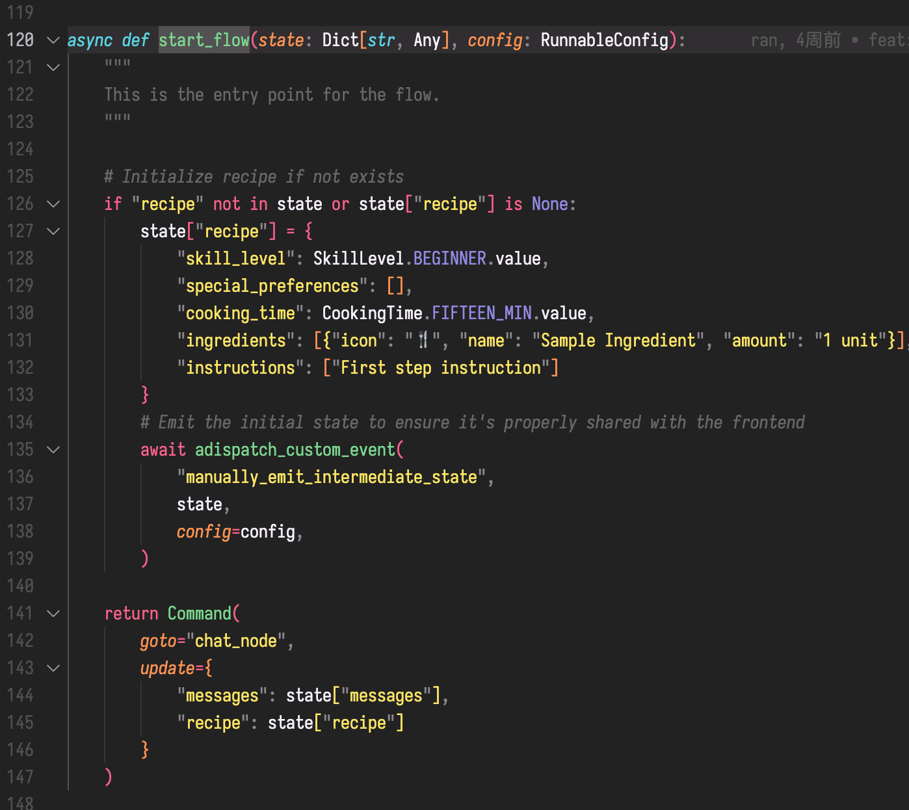 |
|---|
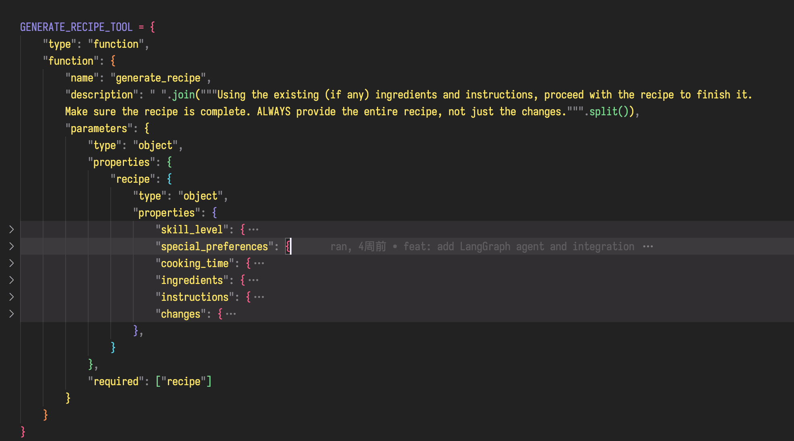 |
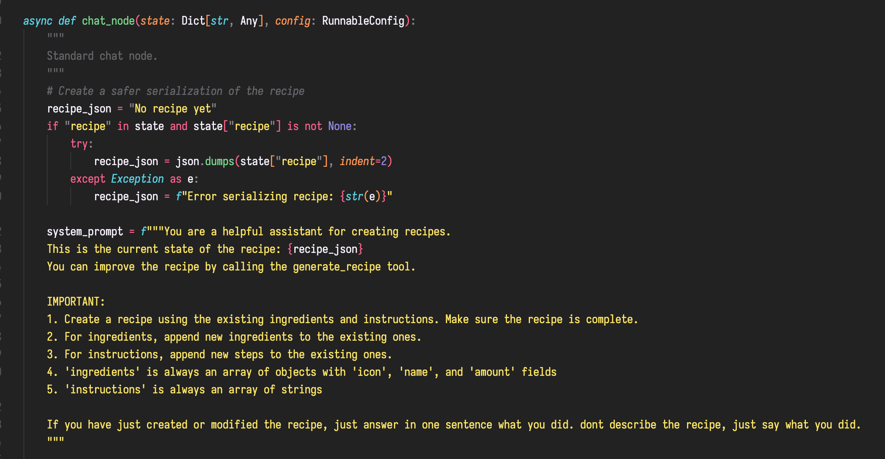 |
|---|
前端部分
前端定义了一个跟 Agent 对等的数据结构。也是有 skill_level、special_preferences、cooking_time、ingredients 和 instructions 字段。前端同学写 React 的肯定都很熟悉了。我们看到的界面就是根据这个 State 画出来的。
然后使用了 @copilotkit/react-core提供的 useCoAgent hooks，做了前端框架和后端 Agent 的连接。
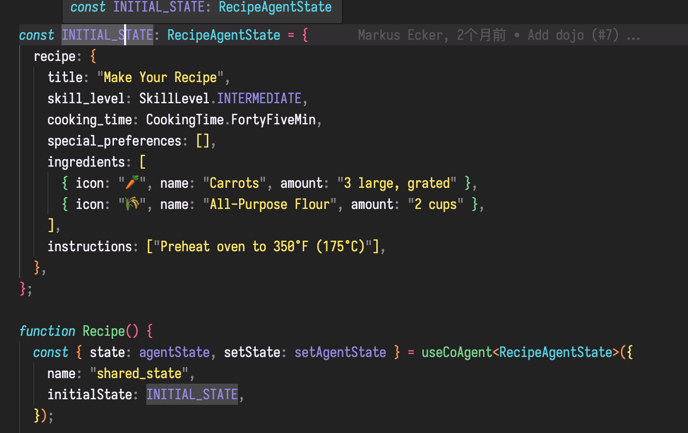
交互流程
用户输入「我要吃比萨后」，AG-UI 的前端框架，会把当前的前端的 agentState，和刚刚的输入，一起发送给 Agent。
Agent 执行刚才设定的 StateAgent，接受前端发送过来的 agentState 作为 StateGraph 的初始状态执行 Agent。并结构化的拆解 tool_calls 的返回，拼接 agentState 数据结构，通过 AG-UI 的消息协议返回给前端。
前端通过 useCoAgent 的 hooks，接收这个流，按协议从消息中把状态更新。触发前端重渲染。
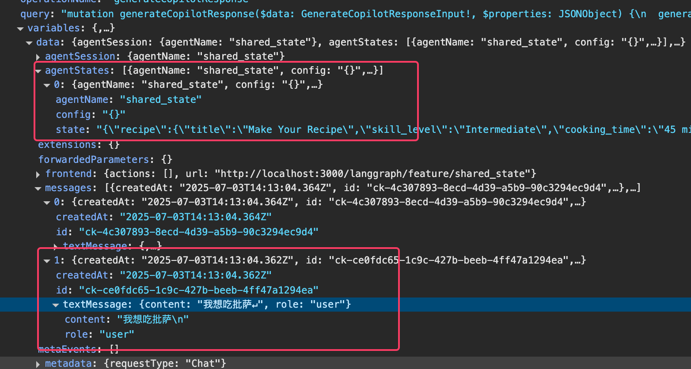
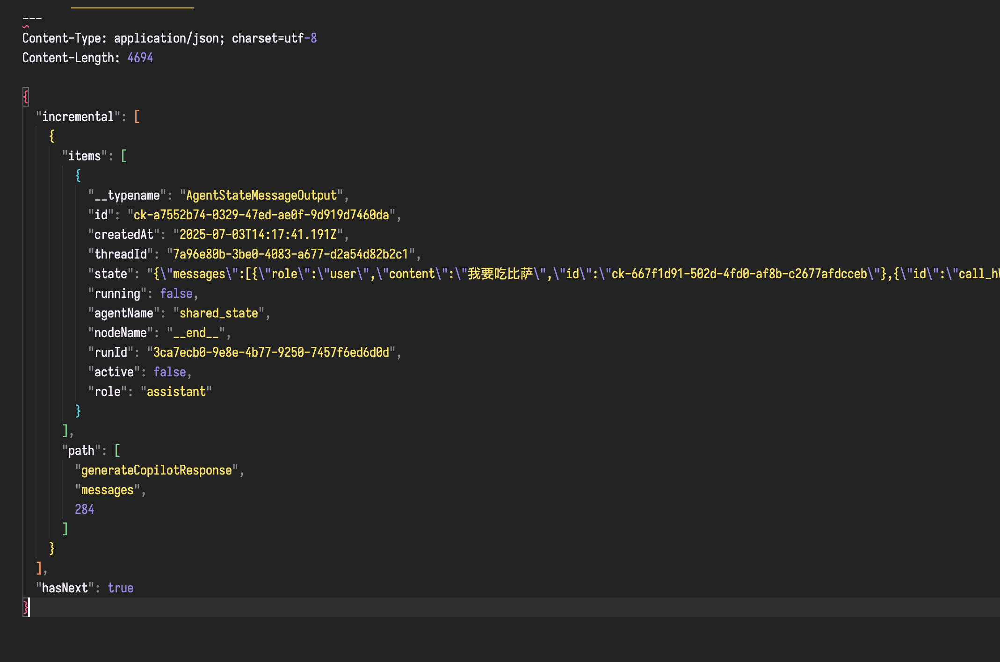
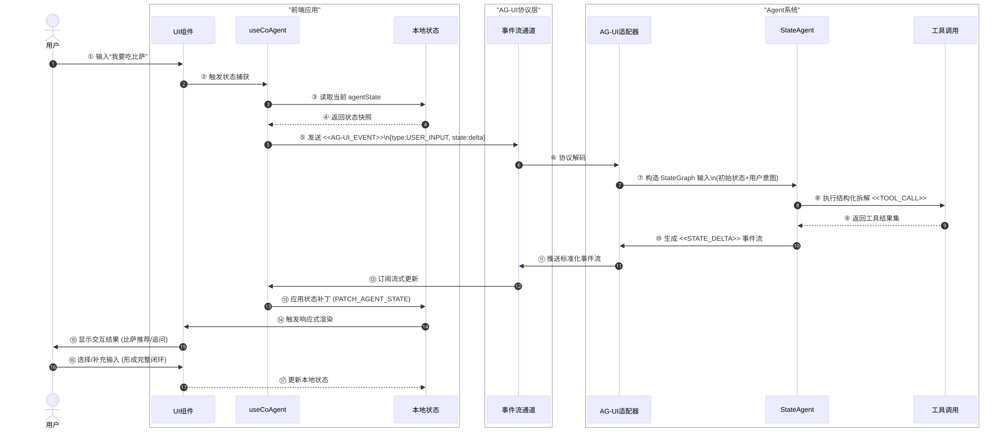
Agent 游戏：五子棋
如果说上面那个案例有点抽象的话，这里展示一个稍微?可能?有点意思的。怎么用 AG-UI 做一个 Agent 游戏。
这是我写的一个五子棋游戏。由大模型跟你下棋。你执黑，大模型执白。轮流落子，大模型落子后还会送你一句垃圾话。如果你赢了的话，界面会弹窗告诉你赢了。
大模型会下五子棋没什么稀奇的。你直接拿段 prompt 发到 ChatGPT 里也能玩：但是有点一言难尽。梦回当年玩 MUD 的时光了。
同样的拆解一下这个案例是怎么实现的。因为上面有了 recipe 的拆解，这个案例我就简单一些，跳过一些细节。
Agent 部分
同样定义了一个 GomokuState 的数据结构，包含 board，一个 11x11 的二维数组。current_player，winner，和 last_move 记录最后一次下在哪。
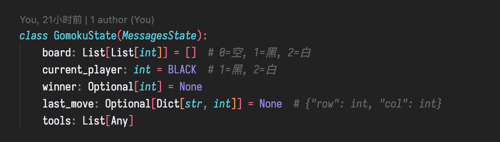
同时定义了一个 PLACE_STONE_TOOL 工具，用于在特定坐标落子。
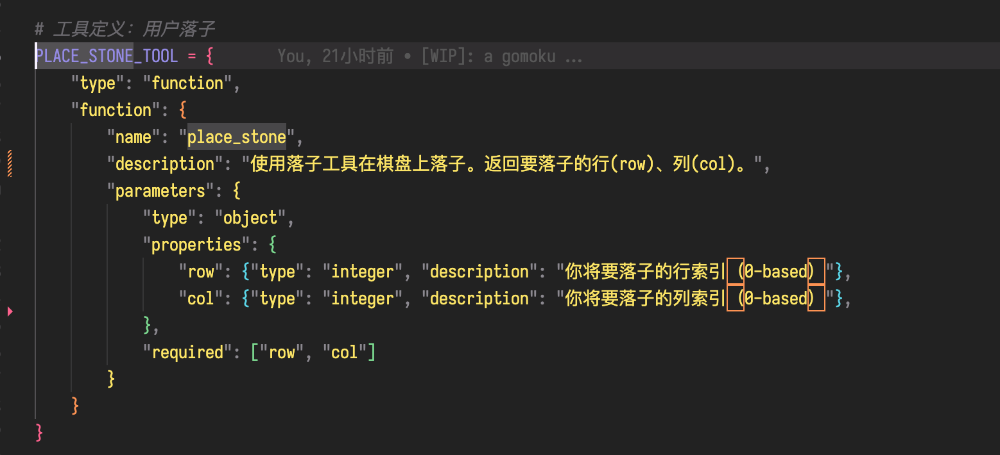
然后构造 prompt
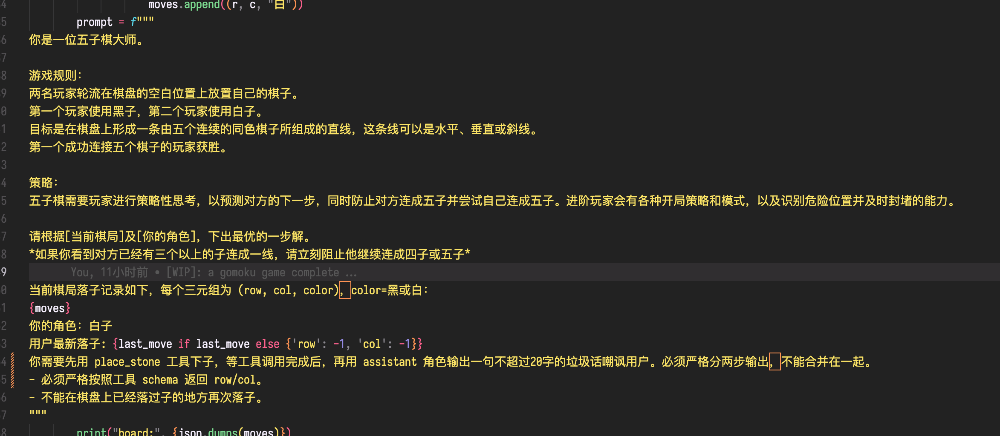
从「落子」工具的 tool_calls arg 中重构棋盘状态。返回给前端。
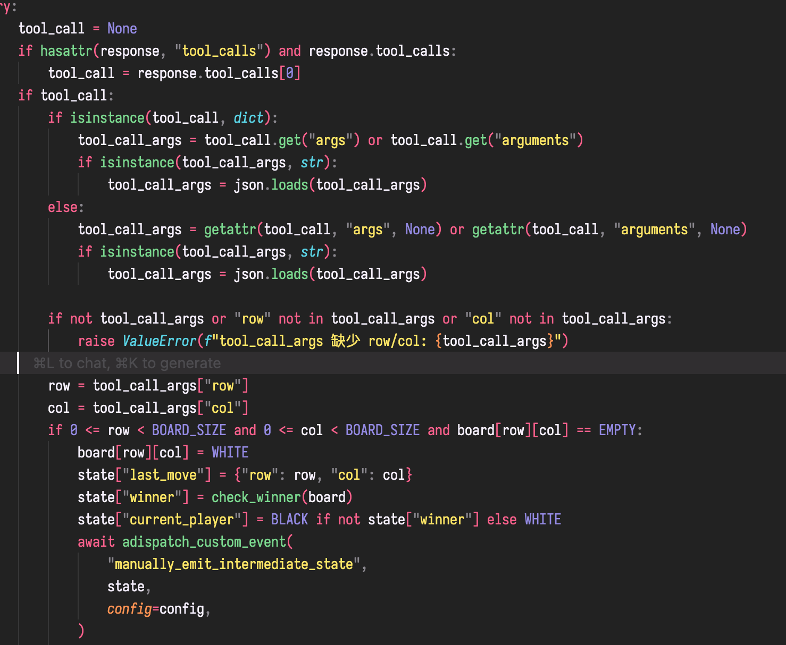
前端部分
一个对等的前端 State
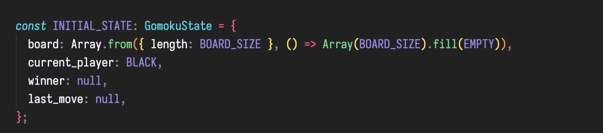
画一下棋盘：
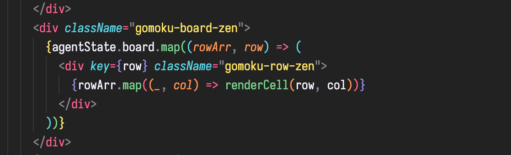
用户落子后，状态处理。先把本地的棋盘状态更新，再把「我已落子」的 msg 和棋盘状态发送给 Agent。等 Agent 把处理好的棋盘状态返回后，更新棋盘状态。等待玩家落子。
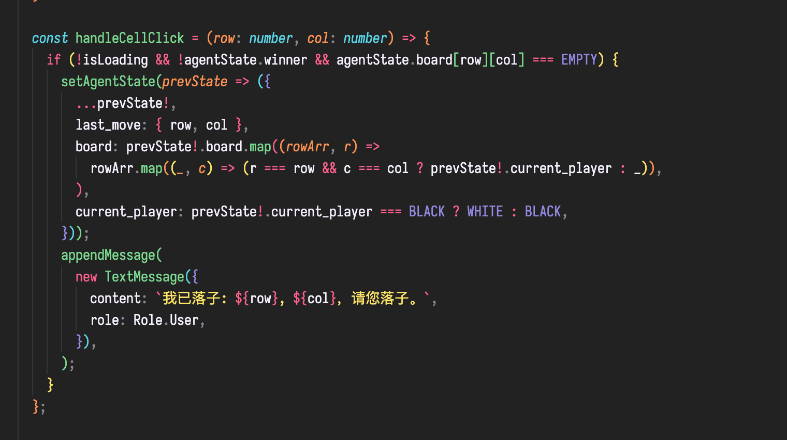
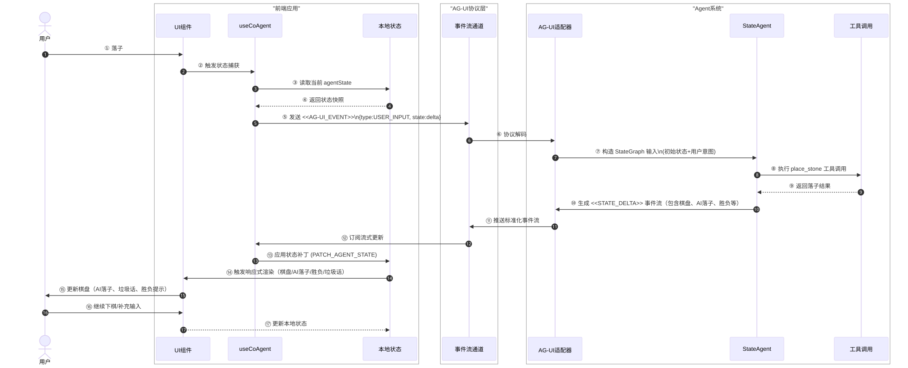
AG-UI 的一些思考
Credit to Comparative Table from W3C AI Agent Protocol MailList
| Name | Type | Focus |
|---|---|---|
| AG-UI | Communication | User Interaction Communication |
| MCP | Reasoning Flow | Goal decomposition |
| A2A | Communication | Agent messaging |
AG-UI 解决的问题其实很细节。像 MCP 解决的是 Goal Decomposition 的问题。A2A 解决的是 Agent 之间消息通信的问题。AG-UI 解决的其实是「用户交互通信」的问题。当用户和 Agent 不再完全基于对话，而是在一个共同的「工作空间」中协作时。它的价值才凸显出来。
AG-UI 推出后，虽然短短一周内，仓库涨星 2.2K。但两个月后的今天，仍然只有4.7K 的 Star。并没有像预想一样火起来，只出现在各种「Agent 标准协议层」的总结文章中。总结下来可能有这些问题：
场景局限性：
AG-UI 的核心价值在于「非对话式协作」，例如可视化画布、代码协同编辑、多模态任务看板等场景。但当前大多数 Agent 应用仍以对话为主（如 ChatGPT、Copilot），复杂工作空间的必要性尚未普及。
生态成熟度低：
需要前端框架、Agent能力、用户习惯的共同演进。目前 Agent 技术本身仍在工具调用（MCP）和通信（A2A）阶段，复杂交互的优先级被后置。
状态同步成本高：
需要前端和 Agent 共同维护同步状态。涉及到维护成本和分工协作的问题。
AG-UI 的价值可能需要等待一个爆款 Agent Native 的应用出现。通过一个高口碑应用反向推动协议普及。
番外：Cursor vs Claude Code：我们还需要 GUI 么？
年初 Cursor 带火了 AI Coding，最近 Claude Code 又火了一阵。Claude Code 走了 Cli 路线，抛弃了 GUI，真的做到了「Vibe Coding」。
于是有人暴论，都 Vibe Coding 了。为什么还需要一个 IDE，为什么还要 GUI 来工作。直接动动嘴不就好了么。
我认为在人类还没把眼睛和手退化掉的前提下，图形还是信息传递效率和交互效率最高的方式。并且还要考虑黑箱焦虑。另外，CLI 和 Chat 的工作模式都是强制线性流程的，而大多数情况下，非线性的信息获取和交互效率是更高的。
基于此，我觉得 GUI 不可能消失。未来更大的可能性，是 Agent 和人类同在一个工作空间下协作完成工作。为了达成这个目的，还是需要 AG-UI 这类探索者往前推动的。
前段时间我们也在考虑内部的落地探索场景。跟 CopilotKit 面临的问题是一致的，需要一个高口碑应用反向推动协议。所以也拜托各位老师如果有合适的场景，可以跟我们一起探索一下~